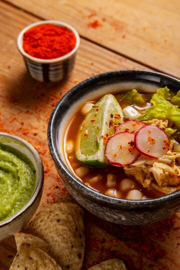

Pozole Rojo

Pozole is a Mexican poem for the palate that no one can resist its charms.
A curious and disturbing fact about pozole is that, being a dish of Pre-Hispanic origin, it was made with human meat from defeated warriors. Obviously after the arrival of the Spanish this changed to pork and chicken meat.
Ingredients
- 1 pound boneless pork shoulder (cubed)
- 1 pound boneless pork loin (cubed)
- 1/2 pound pork neck bones
- 1 head garlic
- 1 clove garlic
- 1 large plum tomato
- 4 ounces dried guajillo chiles (stemmed and seeded)
- 1/4 teaspoon dried oregano
- 1 pinch ground cumin
- 2 cans (16 ounce) white hominy (drained)
- Salt and Pepper
Toppings
- shredded lettuce or cabbage (disinfected)
- 1 small onion (diced)
- 2 radishes (sliced)
- Avocado (optional)
- 4 limes (quartered)
Instructions
- Place pork shoulder, pork loin, pork neck bones and drained hominy in a large pot; cover with water. Add 1 head of garlic and salt to taste. Bring to a boil, reduce heat and simmer until meat is tender and cooked through, about 1 hour and 20 minutes.
- Meanwhile, place tomato and guajillo chiles in a pot and add enough water to cover; bring to a boil. Cook until chiles have softened, about 15 minutes; drain.
- Place tomato and chiles with salt, 1 clove garlic, oregano, and cumin in a blender; add 2 cups water. Blend until smooth. Strain mixture through a fine-mesh sieve and set chile sauce aside.
- Transfer pork to a work surface and shred with 2 forks. Discard pork bones and garlic.
- Stir chile sauce and shredded pork into the pot. Simmer pozole until flavors have blended, about 5 - 10 minutes.
- Ladle pozole into serving bowls and add toppings to taste, serve lime wedge on the side.
Return to main page